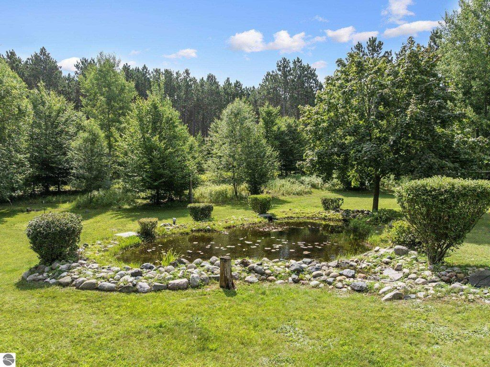
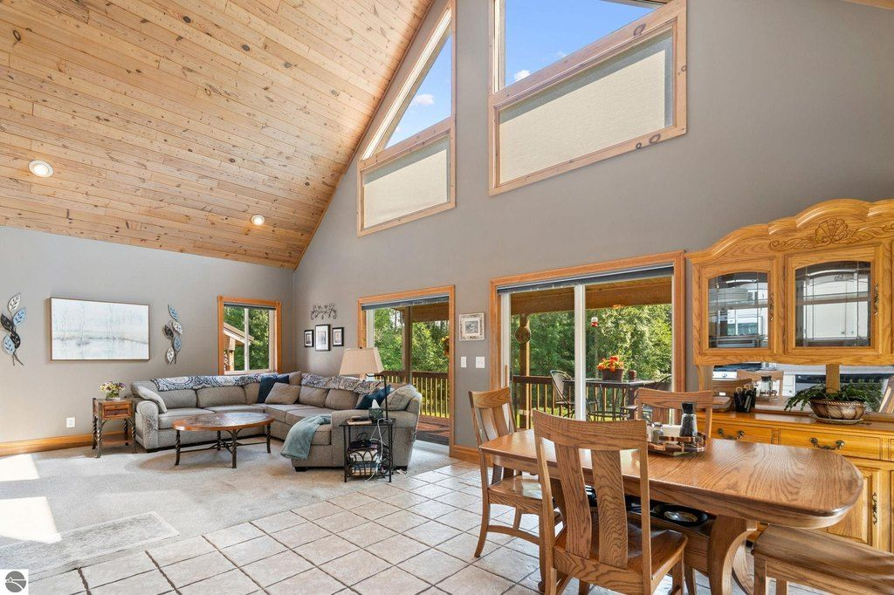
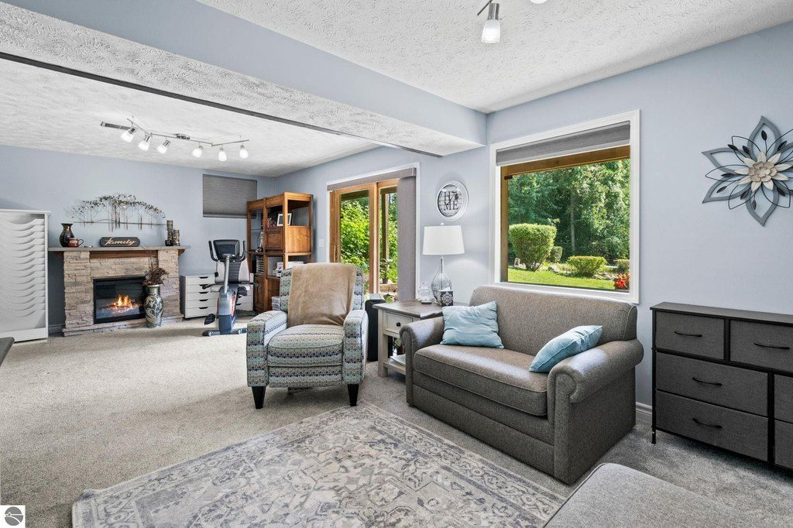
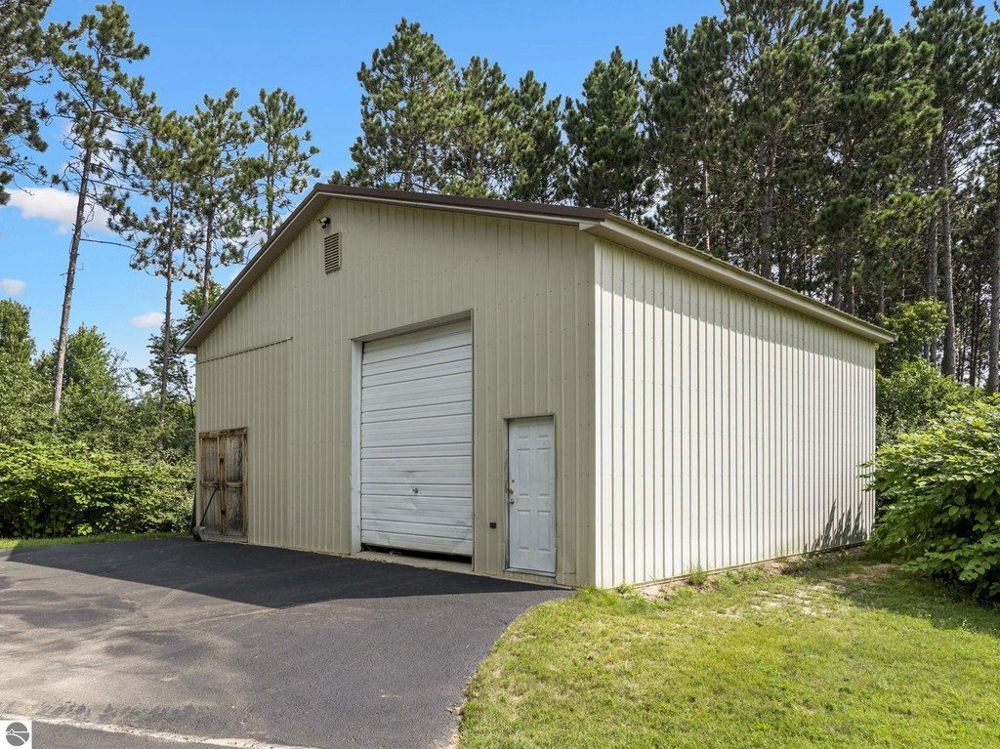
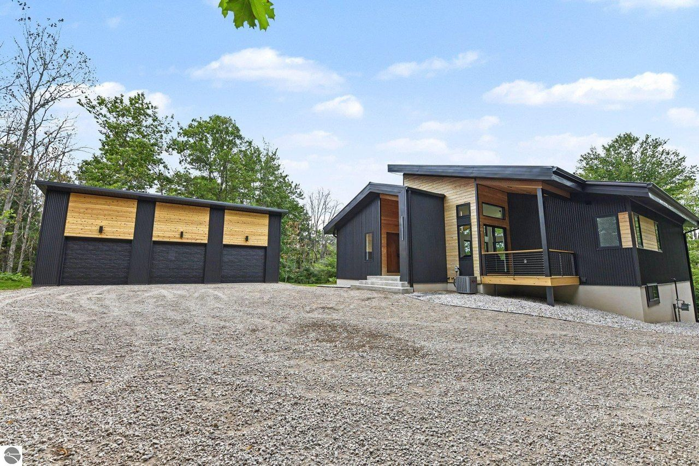
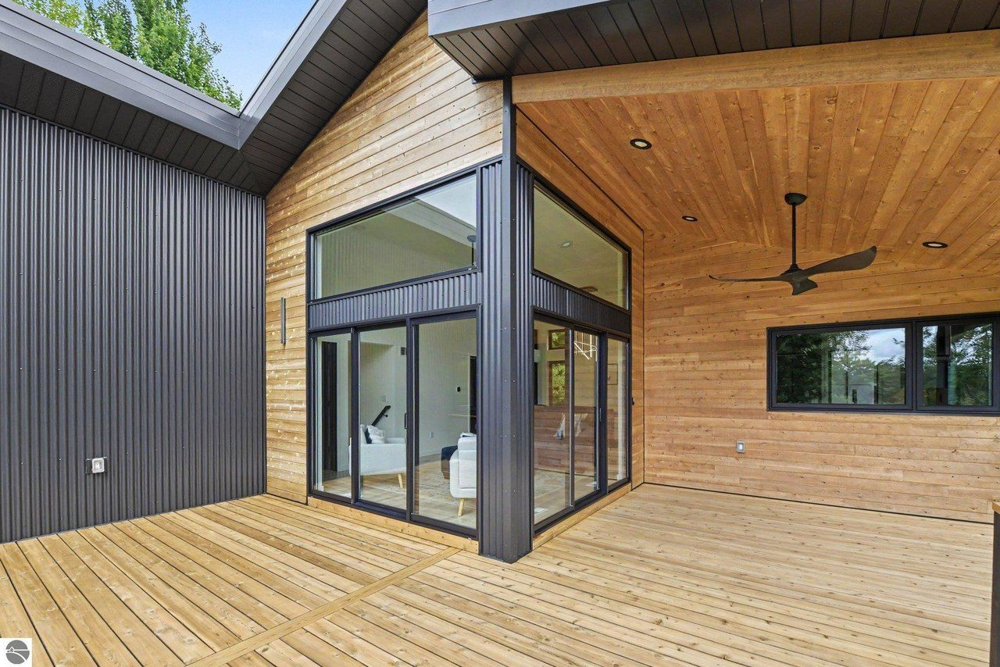
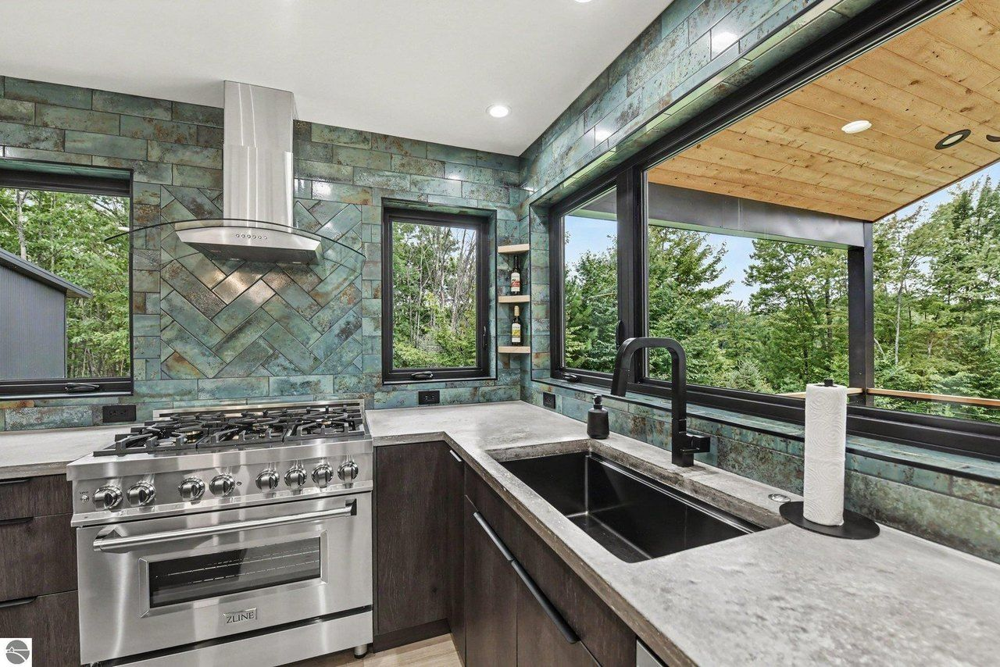
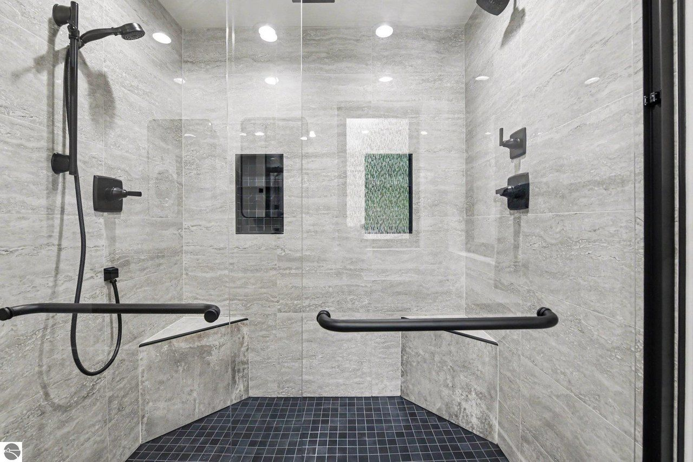

The two houses




5312 Samels Rd




5228 Hanna Rd
Side by side
| Samels | Hanna | |
|---|---|---|
| List price | $619,900, down from $675K (cuts 8/24 and 9/24) | $695,000, down from $750K (cut 9/17) |
| $ / sq ft | $260 | $311 |
| Finished sq ft | 2,380 (1,480 above grade + 900 walk-out) | 2,234 (1,120 above grade + 1,114 walk-out) |
| Beds / baths | 4 bd (2 main, loft, lower) / 2 full + 1 ¾ | 3 bd / 2 ¾ (shower only, no tub, no en-suite) |
| Lot | 6.00 ac, wooded, sloped, pond | 3.91 ac, steep; ~0.7 ac under 10% slope |
| Build | 1997 chalet, 1.5 story, metal roof, vinyl siding | 2022 ranch, ICF + 2×6 walls, metal roof |
| Garage / barns | Attached 24×24 + 32×38 pole barn + second garage + shed | Detached 3-bay garage (~36–40 ft wide, est.); nothing else |
| Basement | Finished walk-out; family room 29'9" × 19'9" | Finished walk-out (half the house) |
| Condition | Dated interior (pine, oak, carpet, tile); kitchen already modern | Turnkey, move-in ready |
| Systems | Propane forced air, central air; roof/furnace/well/septic ages unknown, needs checking | Natural gas, central air, tankless water heater |
| Taxes / HOA | 2025 tax $2,996; resets after sale (est. $5.5–7K homestead). Annual road fee likely, amount unknown | Not listed; est. ~$3.5K now, ~$8.4K homestead after reassessment. No HOA; private road agreement likely |
| Drive to downtown TC | ~29 min / 15.6 mi | ~29 min / 15.8 mi |
| Steinway B | Fits, centered in the vaulted great room | Tight, 1,120 sf main floor; needs checking |
| Gym, plunge, 3 bikes | Lower-level gym/TV room or barn gym; lots of room | Lower level or a garage bay (competes with cars); needs checking |
| Airstream (9'9" tall) | Pole barn is long enough; door height unknown | Doors look ~8 ft; one likely needs raising (~$8–15K est.) |
| Permits | 1999 pole barn permit closed without a final (2012); no record for the second garage/shed | 2022 permits not in public search; needs checking |
Pros and cons
Samels
Pros
- More space: 4 bedrooms, a 19×14 loft suite with its own bath, a big walk-out family room
- The layout Jenny prefers; the great room takes the Steinway
- 6 acres and a pond; pole barn, second garage and shed for bikes, gym and a tandem garage
- $75K lower list price, $260/sf
Cons
- Interior work needed: est. $103–274K and months of trades
- 29-year-old house; system ages unknown
- Barn permit never finaled; second garage/shed not on record
- Propane heat; taxes reset after the sale
Hanna
Pros
- Turnkey 2022 build; move in now
- ICF walls, metal roof, natural gas, tankless: efficient, low maintenance
- Modern finishes: concrete counters, 36" dual-fuel range, lots of glass, cable-rail decks
- No renovation timeline or contractor risk
Cons
- Smaller: 1,120 sf main floor, 3 bedrooms, no tub, no en-suite
- Steinway and home gym fit unclear
- Garage doors likely too low for the Airstream; little flat land for a new barn
- Listing agent is an owner and the builder; private road with several easements; tax jump likely
Samels interior work
Low / mid / high, installed, Traverse City area, 2026. Estimates from published cost guides, not contractor quotes. Scope comes from the listing photos and a lower-level primary suite.
| Item | Low | Mid | High | Note |
|---|---|---|---|---|
| Lower primary bath (expand; tub, separate shower, double vanity) | $34.5K | $49K | $74K | Fit depends on the wall behind it |
| Loft ¾ bath (acrylic shower, vanity, cover the pine) | $9.5K | $14K | $23K | Most rustic room |
| Main full bath (tub-shower, new top, floor) | $8K | $12K | $18K | Partly updated already |
| 3 matching toilets | $1.2K | $2K | $3K | |
| Flooring, ~2,000 sf LVP/engineered incl. tear-out | $13K | $18K | $28K | Tile may be on mortar |
| Stairs, 2 flights | $3K | $5.5K | $9K | |
| Whole-house paint | $6K | $9K | $13K | |
| Pine T&G ceilings and knee walls | $3K | $6K | $12K | Biggest look change per dollar |
| Trim + ~15 doors | $3K | $6K | $12K | |
| Closets (3–4) + primary closet | $5K | $10.5K | $20K | |
| Close 1–2 openings (lower French doors) | $1.5K | $3K | $5K | |
| Lighting, ~20 fixtures + suite cans | $3.5K | $7K | $13K | |
| Stair and loft railing | $1.5K | $3.5K | $7K | |
| Egress window (if needed) + permits | $0.5K | $2.5K | $7.5K | |
| Total with 10–15% contingency | ~$103K | ~$165K | ~$274K | Keep lower bath footprint: ~$81K / $134K / $224K |
Northern Michigan trades book 2–6+ months out; booking in winter helps. Active work is roughly 2–4 months for the full scope (a judgment, not a quote). Living there in phases looks likely: the main floor and loft stay usable while the lower suite is built. Flooring and the main bath are the disruptive weeks.
Barn gym, gym bath, tandem garage door and solar; closing out the barn permit or after-the-fact permits; surprises with the furnace, well, septic or roof; optional fireplace refacing (+$3–8K).
Cost sources: Traverse City Builders bath guide 2026 · InstallationCalculator, Traverse City · CostPrism, Michigan flooring · Costonce, Michigan LVP · Angi, ceiling paint · Vork Brothers, Michigan painting
What would tip it
- Samels wins if the real reno lands near or under ~$100K (paint the pine, LVP throughout, refresh the baths, keep the lower bath footprint) and you can live there during the work. The total then sits close to Hanna's price with far more room, land and barns.
- Samels wins if inspection finds the roof, furnace, well and septic healthy and a barn door can be raised for the Airstream.
- Hanna wins if the full primary suite (~$165K+) is a must and the timeline runs 6+ months, or if inspection turns up major system or permit problems at Samels.
- Hanna wins if the Steinway and a real gym fit comfortably when measured, which erases Samels' biggest space edge.
Open questions
- Ages of the roof, furnace, water heater, well and septic; well yield and water test
- Pole barn and second garage door heights (Airstream needs ≥ 10'0" × 9')
- Barn permit close-out; status of the second garage/shed
- Lower bath size and what's behind its wall; lower bedroom egress window
- Real wood or veneer T&G; tile on mortar; lower slab moisture
- Room measurements (master, kitchen, stairs) for the 3D model
- Road association fee and plowing
- Garage depth, door sizes, wall height; could one bay take a 12×12 door?
- Where the Steinway would go (measure the main floor)
- Gym space: lower-level ceiling height and floor
- Certificate of occupancy, permits, builder warranty
- Road maintenance agreement, easements, plowing cost
- Internet provider; deed restrictions on outbuildings
- Which level each bedroom is on; cost to add a tub or en-suite